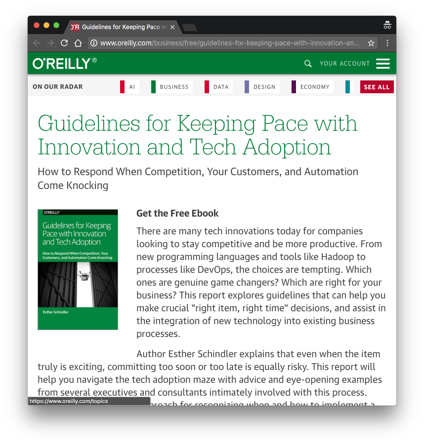

Oreilly の無料本を自動で入手する方法
概要
freebora という Oreilly の無料電子書籍をダウンロードするコマンドラインツールがある。
Python で書かれており、ソースコードは Github で公開されている。
電子書籍のダウンロードロジックが気になったので、ソースコードを探索してみた。
ソースコード探索
探索と言っても重要な部分は freebora/freebora/freebora.py 内にすべてまとまっていて、大まかに以下の流れで無料電子書籍を抽出/ダウンロードしていた。
- 1.
http://shop.oreilly.com/category/ebooks.doにアクセスしカテゴリ一覧を取得 - 2.
http://shop.oreilly.com/category/ebooks/[category].doにアクセスし電子書籍一覧を取得 - 3. 値段が
$0.00に設定されている電子書籍ページ URL を抽出 - 4. 対象電子書籍ページの URL を整形して、ダウンロード
処理 4. のダウンロード URL 整形処理に関してだけ補足。
以下に freebora から抜粋したソースコードを掲載する。
ソースコード内の for 内部が処理 4 となる。
重要なのは re.sub() で、それぞれの URL を .csp を .pdf に/free/ を /free/files/ に置換する処理を行っている。
...
# https://github.com/deeplook/freebora/blob/master/freebora/freebora.py#L56-L73 より引用
t2 = etree.parse('http://shop.oreilly.com' + page_url, parser=p)
xp = '//span[@class="price"][contains(., "$0.00")]/'\
'../../../../div[@class="thumbheader"]/a/@href'
paths = t2.xpath(xp)
for j, path in enumerate(paths):
url = 'http://shop.oreilly.com' + path
html = requests.get(url).text
url_csps = re.findall('path_info\:\s+(.*?\.csp)', html)
if len(url_csps) != 1:
continue
url_csp = url_csps[0]
url_csp = re.sub('\?.*', '', url_csp)
url_pdf = re.sub('\.csp', '.pdf', url_csp)
url_pdf = re.sub('/free/', '/free/files/', url_pdf)
u = 'http://www.oreilly.com/%s' % url_pdf
if verbose:
print(u)
yield u
...
実際の無料電子書籍 URL から手動で上記処理 4 を実行してみる。
下記 URL は『Guidelines for Keeping Pace with Innovation and Tech Adoption』という電子書籍のページ。こいつに対してさっきの置換処理を実行する。
http://www.oreilly.com/business/free/guidelines-for-keeping-pace-with-innovation-and-tech-adoption.csp

すると対象電子書籍の PDF を閲覧することが出来る URL が生成される。
http://www.oreilly.com/business/free/files/guidelines-for-keeping-pace-with-innovation-and-tech-adoption.pdf
気づき
1.http://www.oreilly.com/[category]/free/からスクレイプしたほうが早い
freedora は http://shop.oreilly.com/category/ebooks/[category].do から無料になっている電子書籍を探していたが、実は Oreilly さんが無料本に関しては http://www.oreilly.com/[category]/free/ にまとめてくれている。
なのでそちらからスクレイピングしたほうが処理としてはスマートになりそう。
ちなみにカテゴリは以下のものがあります
category = {"business", "data", "iot", "design", "programming", "security", "web-platform", "webops"}
2. PDF 以外のフォーマットもダウンロードできる
freedora では PDF 形式の電子書籍をダウンロードしてくるのだが、
.pdf 以外にも .epub, .mobi フォーマットの存在を確認した。
Kindle Paper で電子書籍を読んでいると .pdf より .mobi のほうが扱いが良かったりするので、必要に合わせてフォーマットを指定すると良さげ。
参考 URL 等
- https://github.com/deeplook/freebora : Download free ebooks from O’Reilly.